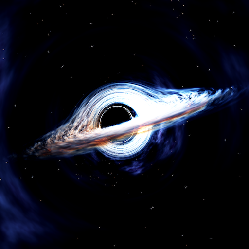
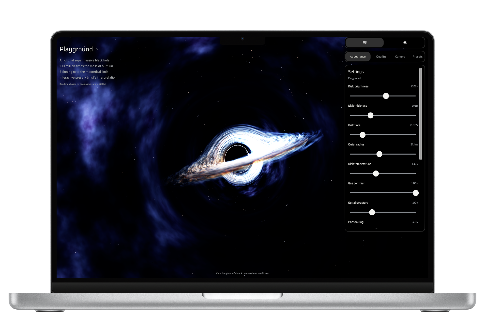
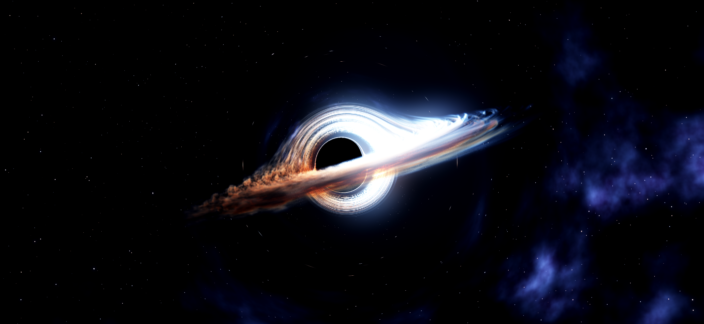
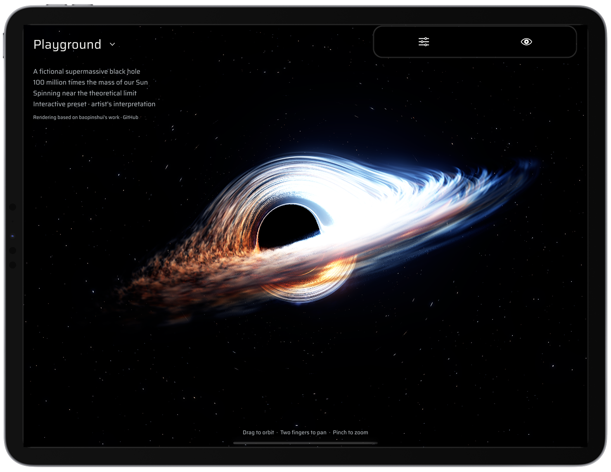

Follow your imagination.
Change the disk’s brightness, color, thickness, and motion. Add a haze of background clouds or let the darkness speak for itself.
Your own corner of the cosmos.
An interactive, cinematic universe.
Free · Desktop browsers
Orbit the darkness. Shape the light.
Explore the universe from your own point of view.
For Mac, iPhone, iPad, and Android

One purchase for your compatible Apple devices.
No account, ads, subscriptions, or in-app purchases.
Make space your own
Choose Gargantua, TON 618, or M87*. Then shape the scene live, from the glow of the disk to the clouds and stars beyond it.
Change the disk’s brightness, color, thickness, and motion. Add a haze of background clouds or let the darkness speak for itself.
Export your whole Playground setup as one JSON file. Share it with a friend, import it on another device, or return to a built-in preset.
Freeze the animation, find your angle, and take a clean screenshot without the interface. Your next wallpaper is waiting.
Beyond the event horizon
Discover turbulent accretion disks, gravitational lensing, glowing neutron stars, sweeping pulsar beams, and orbiting black holes.
A black hole. All your screens.
Glowing gas. Light bent by gravity. Orbit, pan, and zoom to watch a familiar silhouette become something new.



Orbit, pan, zoom, or let the camera drift automatically. Hide the controls with the eye button for an unobstructed view.
Turn on Vela’s simulated pulses or listen to GW150914’s gravitational-wave audio while exploring the scene.
Choose Performance, High, or Ultra quality and a 30 or 60 FPS target. Native Metal rendering brings the scenes to your Apple devices.
Mission support
Need a hand? Use the contact details in our App Store listing. Include your device model, operating system version, and a short description of what happened.
Support via the App StoreDrag with one finger to orbit, use two fingers to pan, and pinch to zoom. Open Settings with the sliders icon. The Camera tab includes Reset camera, automatic orbit, and freeze animation. Tap the eye button to hide the interface.
Left-click and drag to orbit, right-click and drag to pan, and pinch or scroll to zoom. Open Settings to adjust the scene. Reset camera is in the Camera tab.
Select Playground, then open Settings. Appearance controls the disk, stars, background clouds, and animation. Choose a built-in black hole under Presets, or make it your own.
Use Export JSON in Presets to save or share one file containing your appearance, camera, quality, and frame-rate settings. Import JSON loads a saved setup. The built-in presets stay unchanged.
Open Settings → Camera and choose Take screenshot at the bottom. The image is captured without the interface.
On Mac, choose where to save the PNG in the system save dialog. On iPhone and iPad, use the system share sheet to save or share it. On Android, use the system share chooser.
Choose Vela Pulsar or GW150914 and tap the speaker button. Audio starts muted, so you decide when to listen.
Black Hole Playground is built for Mac, iPhone, iPad, and Android. Check your device’s store listing for compatibility and operating system requirements.
Open Settings → Quality and choose Performance with a 30 FPS target for a lighter workload. High and Ultra add detail. Actual frame rate depends on your device and scene settings.
Black Hole Playground is an artistic visualization inspired by astrophysics. Motion, scale, and visual effects are illustrative, rather than a precision scientific simulation.